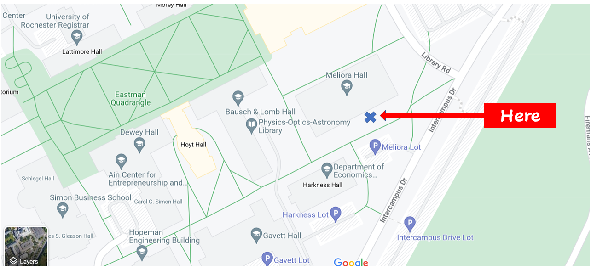
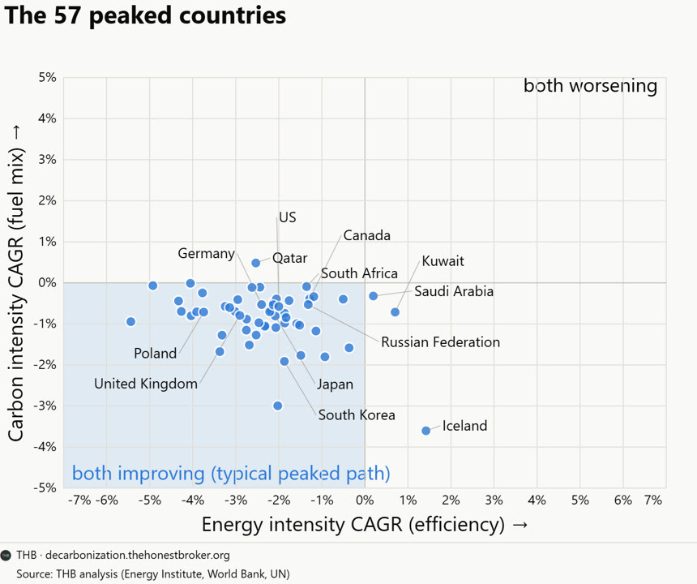

WEEKLY REMINDERS/ANNOUNCEMENTS – EWOT, Week 3
Readings and Topics this Week: I will be finishing up our intro materials hopefully by Wednesday and then by end of the week we will be moving onto our Economic Evolution materials (Sections B and C). Please read at your convenience. I WILL be doing my own interpretation of the i,Pencil article, so if you have not read it, please do.
Recitation: You will have your third recitation this week and it will be the first of several games you will be playing throughout the semester. The game is played in polisci classes, sociology classes, psych classes and elsewhere, and we will return to it throughout the semester and again in Micro, so we’d absolutely love to have you come and play hard! There will obviously be spoils going to the victors. AND a controversial new game has been added to spice it up a bit.
Weekly AssignmentS: Your week two research and rumination assignments are due this Sunday night, September 13th. I have also just posted your two assignments that are due for Week Three on Sunday the 20th. These are both shorter than the week two assignments but of course the sooner you start them the better.
Your output from BOTH Week 3 assignments is going to be publicly viewable – so consider carefully how you want others to see the kind of work and engagement you put in.
Our aim with grading your work is to have it done one week after submission. You can find the name of your grading TA by comparing the weekly TA announcement (which indicates which TA is doing which grading group) with the grading group you are in (found in the Blackboard gradebook).
Course Productivity Modules and Interfaces
All of your course questions answered, without having to read:
https://chatgpt.com/g/g-6a763182a9d08191b73bba0904ed9144-econ-108-syllabus-what-do-you-need-to-know
Everything you could want to know about the course topics and readings … without having to read them: the UNReading List: https://chatgpt.com/g/g-6a6b783f83a881919379581ca86905d8-the-ewot-unreading-list
Office Hours Site, previous announcements resources: https://rochesterrizzo.github.io/Rizzo-Hours/index.html or tiny.cc/RizzoHours
The Economic Demonology Project: https://rochesterrizzo.github.io/economic-demonology/
TA Office Hours and Resources
Look for an announcement from our Head TA Katherine Watai.
My Availability
Check tiny.cc/RizzoHours for next week’s office hours and
events. Check daily for last minute additions and updates. WEDNESDAY
time has been moved later so we can walk together to the special
lecture.
I am off the grid from Friday afternoon through Sunday night, so please run questions and communications through the TAs, I will not be available.
Reminder, here is where our outdoor office hours are located. Come by! Even if you don’t think you have much to say, we would love for you all to get to know each other and our former students too.

Upcoming Special Events
Department of Economics Engerman Lecture
“After Shocks: Adaptation and Growth through Volatile Times”
Who: Rick Hornbeck of the University of Chicago
Professor Hornbeck is the V. Duane Rath Professor of Economics at the University of Chicago Booth School of Business. He is a leading applied microeconomist and economic historian whose research explores the historical development of the American economy. By combining massive, newly digitized historical datasets with modern economic theory, his work uncovers the fundamental, long-term drivers of wealth, productivity, and living standards across generations. Professor Hornbeck’s research frequently reshapes how we understand major historical shifts and crises. His famous studies look beyond traditional metrics to evaluate the enduring economic footprint of environmental disasters like the 1930s Dust Bowl, the systemic human gains of post-Civil War emancipation, and the massive aggregate wealth generated by historical infrastructure expansions like the American railroad network. He holds a Ph.D. in Economics from the Massachusetts Institute of Technology (MIT) and previously served as the Dunwalke Associate Professor of American History in the Economics Department at Harvard University.
Day: Wednesday, September 16th
Time: 5:00pm
Where: Morey 321
Department of Economics Special Event

Title: Trade War!
Who: Professor Alessandria
Date: Tuesday, September 29th
Time: TBD
Location: TBD
More Info: There will be DINO BBQ served!
The Politics and Markets Project, Hosted by Professor David Primo
Title: Topic TBD (this will be a moderated panel discussion)
Date: Wednesday, November 4th
Time: 7:30pm to 8:30pm
Location: Wegmans Hall, 1400.
More Info on the PMP: Follow on Instagram
Department of Economics Special Guest Lecture
Title: Human Capital for Humans, with moderation by U of R Economics Undergraduate Isaac Miller
Who: Pablo Pena of the University of Chicago
Date: Thursday, October 8th
Time: TBD
Location: TBD
More Info: Why do people marry, have kids, invest in health, or choose a career? Economics has an answer, and it's not "supply and demand," it's human capital theory, the framework Nobel laureate Gary Becker built and spent his career applying to every domain of human life. Pablo Peña studied under Becker at Chicago, taught his famous course after him, and has now written the accessible version of that legendary class: Human Capital for Humans.
Join us for a talk and conversation with Professor Peña about the book — how economists think about parenting, aging, marriage, and the everyday decisions that shape who we become. Expect a short talk, a moderated discussion, and open Q&A. Copies of the book will be available for purchase (and signing) at the event.
About Professor Pena: Pablo Peña first encountered human capital theory twenty years ago as an undergraduate captivated by a course taught by Nobel laureate Gary Becker at the University of Chicago — an experience he's described as immediately clarifying. That encounter led him to TA the course, and eventually to teach it himself. Peña is now an Associate Instructional Professor in Economics and the College at the University of Chicago, specializing in applied price theory, human capital theory, and empirical economics, and his research uses experimental and quasi-experimental methods and large datasets to test economic theories with actionable applications for business, nonprofits, and government. Outside academia, he co-founded Microanalitica, previously served as Director of Private Sector Partnerships at the Development Innovation Lab, and headed Economic Studies at Mexico's National Banking and Securities Commission. He earned his Ph.D. in Economics from the University of Chicago.
His book, Human Capital for Humans: An Accessible Introduction to the Economic Science of People (University of Chicago Press, 2025), has been nominated as a finalist for the Manhattan Institute's 2026 Hayek Book Prize, and has drawn praise from economists including Steven Levitt, Tyler Cowen, and Nobel laureate Michael Kremer.
Department of Economics PIZZA and PAYOFFS Special Event
Title: Pizza and Payoffs: Everything you wanted to know about the Econ major — courses, careers, and what you can actually do with an economics degree.
Who: Professor Lisa Kahn and special guest Chris Nosko
Date: mid-November
Time: TBD
Location: TBD
More Info: Chris Nosko is the head economist for Amazon!
Supply and Demand Mechanics Lab
Look for an announcement from our TA staff
Details: TBD
Some Items that Caught Our Attention
As the beer industry tanks around the country, will Private Equity Destroy our Beloved Genny? “There is an important difference between the brewery KPS bought in 2009 and the one Saothair is buying today. KPS inherited an undercapitalized plant and immediately began investing in its infrastructure. Saothair is inheriting the result of years of subsequent investment, including the roughly $200 million FIFCO spent modernizing the Rochester plant. In 2009, the opportunity was to fix the factory. In 2026, the opportunity may be figuring out how much more business that factory can handle.
The Genesee name matters, and so do Labatt, Seagram’s Escapes and the rest of the portfolio. But there is a much longer story here than simply private equity buying a regional brewery. KPS bought an undercapitalized manufacturing operation in 2009, invested in its infrastructure and used it as the foundation for a larger brewing platform. FIFCO then spent years and hundreds of millions of dollars turning that Rochester operation into an even more capable beverage-manufacturing facility. Now Saothair owns it.”
For Exam 1, Economic Demonology on Selfishness vs Self Interest.
Can This Halt the Decline of the Academy? An award for scholars that tell the truth: “One of us (Mr. Fryer) released a study in 2016—later published in the Journal of Political Economy—finding that police aren’t more likely to shoot black Americans than white Americans, after accounting for the relevant context. Colleagues who read the draft warned him not to publish: “You’ll ruin your career.” The paper was denounced on social media within minutes of release, and Mr. Fryer needed armed protection for more than a month. Privately, scholars who read the study called it rigorous, honest work. Publicly, many of the same scholars said nothing. No single study settles a question this large—but silence isn’t how science advances.”
Would You Short This View? “Why AI Won't Empty the Finance Suite: when the electronic spreadsheet automated the core of accounting work after 1979, employment did not decline—it quadrupled, from 339,000 to 1.4 million, outpacing U.S. population growth by a factor of nearly seven. Cheaper analysis unleashed latent demand that had always existed but could never be afforded. AI is poised to trigger a far more dramatic expansion—beginning with applications we can already envision, such as real-time continuous auditing and AI system assurance, and extending into domains that, true to the paradox, we cannot yet imagine.”
The Greatest Country on Earth (look
at why)? Denmark is the least corrupt country in the world.
"On top of this, a quarter of Danish children aged between 7 and 14 have
part-time jobs, something which is hugely important for later social
development." "Injection moulding was first developed in the 19th
century but it was only during the Second World War that its use
exploded. Soon after the conflict, furniture maker Ole Kirk Christiansen
bought an injection moulding machine for the use of his small toy
company, Lego, from leg godt – play well" "This is downstream of their
culture of frankness and honesty, and free speech: Denmark has had laws
protecting free speech back as far back as 1849."
"In How To Be Danish, Patrick Kingsley wrote about Denmark’s 70 folk
high schools, which are attended by about one in ten adults, of all
ages. Indeed it’s not uncommon for people to die of old age while
enrolled, which Danes apparently consider a good death. Perhaps there is
some sort of social democracy version of Valhalla where those who died
in the middle of adult education go to." "Danish teenagers drink more
than any other country. As many will have seen in Another Round, a
charming, heart-warming film about four middle aged men descending into
alcoholism, Danish teenagers celebrate their exams with booze ups- the
studenterkørsel - in which they celebrate by riding around in lorries,
dressing up as sailors, and drinking loads of beer.
The Danes have the second largest homes in Europe, and the and the most
number of second homes. If you’re into continental house porn on
Instagram, you’ll have noticed how cheap they are." "This trust is
possible because the people are honest. " ____ maybe try this exercise
with other places/countries.
Almost the Entirety of Nevada is Empty Land: yet NIMBYs would have us believe that Nevada, Canada and Australia have high housing prices because they’ve run out of land. “The project and others like it are a direct result of Nevada’s housing and land shortages. The state needs an estimated 120,000 additional affordable homes but has little land available for development because about 85 percent of it is federally owned and set aside for other purposes like recreation. It is estimated that the state will run out of land to develop by 2032.”
Where Immigrant College Graduates are Employed: “Immigrant students who remain in the U.S. earn more than their native peers, suggesting the segmentation reflects productive sorting rather than blocked opportunity.”
Doomed. “While rising asset demand creates space for ! debt to eventually reach 250% of GDP without higher interest rates, stabilizing debt at any level requires a permanent fiscal adjustment of at least 10% of GDP.”
You Win By Paying Attention to Your Customers: “Why did Airbus succeed when so many similar initiatives crashed and burned? Airbus prevailed because it was the least European version of a European industrial strategy project ever. It put its customer first, was uninterested in being seen as European, had leadership willing to risk political blowback in the pursuit of a good product, and operated in a unique industry”
Nature vs. Life “In contrast, the study also found that “ease of doing business” – a World Bank measurement of the business-friendly character of a country – was correlated with less nature connection. Although Britain is believed to have one of the highest levels of membership of environmental organisations in the world, this apparently pro-nature indicator was found to have little impact on closeness to nature.”
Sucked. “Monday, Roomba manufacturer iRobot’s share price plummeted 33% after the company announced it failed to secure a buyer and would probably go bankrupt. Of course, iRobot did have a buyer: Amazon attempted a $1.4 billion acquisition in 2023, but the forces of “antimonopolism” had other plans. Together, former FTC Chair Lina Khan and EU regulators — my personal nightmare blunt rotation — forced both parties to terminate their deal in order to ‘protect iRobot’s competitors,’ and the immediate result was (oops!) 1/3 of the entire company losing their jobs. In hindsight, it’s clear they murdered a business in cold blood, which begs the question: who will take iRobot’s place in the automated vacuum market? Ah, the Chinese company Roborock, of course! Brilliant work, everyone.”
* * * * *
CHART(S) OF THE WEEK: We’ve already hit PEAK CO2


PHOTO OF THE WEEK: IgNobel Prize Winner?

VIDEO/DOCUMENTARY/BOOK/CARTOON, ETC OF THE WEEK: Isn’t the book ALSO an intrusion?
“you and me. It's about how we are altered by the technology we employ, what we hope to learn, our relationship with nature, those we love, the time we spend, the energy that is consumed and how much freedom we relinquish to technology. Yes, it's true what many say, that distances are eclipsed by technology, but that is a banal fact. The central issue is rather, as Heidegger pointed out, that "nearness remains outstanding." In order to achieve nearness, we must, according to the derided philosopher, relate to the truth, not to technology. Having tried my hand at internet dating, I am inclined to agree with Heidegger.
(Of course, Heidegger could not have predicted the possibilities offered by current technology. He was thinking about cars of fifty horsepower, film projectors and punch-card machines, which were all the rage. But he had an inkling of what might come.)
We are going to give up our own freedom in our eagerness to use new technology, Heidegger claimed. To shift from being free people to becoming resources. The thought is even more fitting now than when he first expressed it. We will not become a resource for one another, unfortunately, but for something less appealing. A resource for organizations such as Apple, Facebook, Instagram, Google, Snapchat and governments, who are trying to map us all out, with our voluntary assistance, in order to use or sell the information. It smacks of exploitation.
The question that Humpty Dumpty poses to Alice remains: "Which is to be master-that's all." You, or someone you don't know?
Humans are social creatures. Being accessible can be a good thing. We are unable to function alone. Yet it's important to be able to turn off your phone, sit down, not say anything, shut your eyes, breathe deeply a couple of times and attempt to think about something other than what you are normally thinking about.
The alternative is to not think anything at all. You may call this meditation, yoga, mindfulness or merely common sense. It can be good. I take pleasure in meditating and practicing yoga. I've also taken up the cousin to this practice-hypnosis-and hypnotize myself for twenty minutes in order to disconnect.
* * *QUOTE * * *
“WL’s [White Liberals] think all the world’s problems can be fixed without any cost to themselves. We don’t believe that. There’s a lot to be said for sacrifice, remorse, even pity. It’s what separates us from roaches”
…
“among a coward's weapons, cynicism is the nastiest of all”
― Paul Farmer, Mountains Beyond Mountains: The Quest of Dr. Paul Farmer, a Man Who Would Cure the World